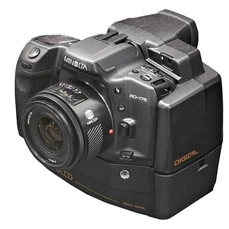

“Photography is an austere and blazing poetry of the real.” – Ansel Adams
History
The first camera known to history is the camera obscura. Conceptual descriptions of camera obscura can be found in Chinese texts from 400 B.C. and in the writings of Aristotle, around 330 B.C. By roughly 1000 A.D., the concept of a camera obscura was articulated by the Arab scholar Ibn Al-Haytham. A camera obscura does not take photographs, but rather it focuses light through a lens (technically a small hole) and projects it onto a screen. Pinhole cameras are close variants on the camera obscura. These devices serve as precursors to everything from still photography to movie cameras and motion picture projectors.
In 1685, the German author Johann Zahn offered a design for what is known as a handheld reflex camera. Yet no inventor physically realized the camera until the French inventor Joseph Nicéphore Niépce created a prototype in roughly 1816.
Evolution of the camera
Handflex Reflex Camera
Johann Zahn, a German author, proposed a design for what is now known as a handheld reflex camera in 1685. However, no inventor physically realized the camera until 1816, when Joseph Nicéphore Niépce constructed a prototype.
The Photographic Camera
While historians generally accept that the first photographic camera was developed in 1816 by Frenchman Joseph Nicéphore Niépce, the camera’s origin relied on centuries of contributions. Niépce created photographic images onto silver chloride-lined paper, and the oldest extant photograph is one he made around 1826. The original shot is still on exhibit at the University of Texas at Austin.
Daguerreotypes
In 1829, Louis Daguerre invented a more efficient camera device. Daguerreotypes were images captured by Daguerre’s camera, and his approach defined cameras in the mid-nineteenth century. Daguerreotypes are created by covering a copper plate with silver, sensitizing it with iodine, then exposing it over hot mercury. Henry Fox Talbot’s calotype, a daguerreotype variant, was also popular.
The Mirror Camera

Daguerre’s camera technology had a flaw where the pictures vanished quickly. This was corrected by American inventor Alexander S. Wolcott, who invented the mirror camera. Instead of a negative image with reversed colors, this camera created a positive impression.
Instantaneous Exposures
In 1871, Richard Leach Maddox devised a gelatin dry plate that produced brief exposures, serving as a forerunner to the Polaroid cameras of the twentieth century.
Kodak

It wasn’t until American George Eastman perfected the use of roll film cameras that analog photography reached its pinnacle. In 1888, Eastman began marketing a box camera he named Kodak, initially using paper film but swiftly transitioning to celluloid. A single Kodak camera arrived with 100 exposures and had to be developed at the Eastman Kodak plant in Rochester, New York. These early film cameras were eventually superseded by Kodak’s Brownie cameras, a less expensive variation, in 1901.
35mm Film Camera
Between 1905 and 1913, camera manufacturers offered freestanding rolls of 35mm film that could be loaded into and withdrawn from the user’s camera. Oskar Barnack, a German scientist, and photographer, is widely recognized for introducing 35mm film cameras, starting with the Leica, which he designed for the Leitz firm. However, Kodak would swiftly become the world’s leading supplier of photographic film for 35mm cameras, with other firms such as Fujifilm later providing stiff competition.
Twin-Reflex Camera
The creation of lens reflex cameras, which offered features such as camera lenses, pentaprism, variable shutter speeds, and removable lenses, marked a significant advancement in the camera. The first of these cameras were dual-lens reflex cameras (or TLRs for short), sold in the 1920s by the German company Franke & Heidecke. TLR cameras were quickly phased out to favor single-lens reflex cameras (or SLR).
Digital SLR Camera
The first DSLR camera was introduced in 1999, and after only a few years of scientific advancement, it had entirely supplanted single-lens reflex cameras. A digital single-lens reflex camera (DSLR or digital SLR) is a camera that produces high-quality images and is popular among both amateurs and professionals. A DSLR camera lets you see the actual appearance you’re shooting through the viewfinder, allowing you to visualize better and record your scenes.
Mirrorless Camera

Epson introduced the first mirrorless camera in 2004, which does not use a reflex mirror. Light flows directly through the lens to the digital sensor, which displays your image on the camera’s LCD screen, allowing you to alter adjustments and preview your image before shooting. While this was not initially considered an easily replaceable camera, changes and developments have cleared the path for additional mirrorless lenses, propelling it to the forefront of customizable photography.
Future of camera
Photography has had a long and eventful history. From wet plates to smartphones. Camera technology has changed dramatically over the years. And trends have come and gone. But what about the future of photography? What changes and developments can we expect in the coming years? And how will photography change our lives? The future is difficult to see. And we don’t have a crystal ball. But the future of photography is something we think about. So here are our predictions for the future of photography.
Light Field Recording
Lytro cameras employ light field technology, which could soon become a bigger part of general photography. Light field photography involves recording the photo and determining which portion to focus on later. Since Lytro came out with its light field technology camera in 2012, there hasn't been a rush of followers. However, Google acquired Lytro in 2018 and has since used the technology in its Project Starline, which it calls a "magic window" that allows you to simulate being face-to-face with someone who is not nearby. Also, Apple was granted a light field technology patent in 2021, presumably to add gesture functionality to its iPhone cameras, allowing them to capture wider ranges. With the big tech guns invested in light field technology, there's no telling how it may be used in digital cameras in the future.
AI Will Change Everything
Artificial intelligence (AI) is something we’re familiar with from science fiction films. They’re either set in the future. Or someone, or something, has travelled back in time. But AI is already with us. AI is already a feature in many modern cameras and lenses. But don’t worry. Your camera isn’t plotting to kill you and take over the world. Not yet anyway. The autofocus and image stabilisation systems both use AI to achieve precise results, as does tracking and automatic exposure features. And similar AI software is being introduced to smartphone cameras and editing apps. The iPhone 7 has a new Portrait mode which blurs the background to create a pleasing shallow depth of field. And Skylum’s Luminar has AI-powered filters that make editing a breeze. The editing software on your computer will also develop with more AI over time. It will be able to recognise specific objects and label them. It will change your setting without you needing to request it. You won’t need to spend ages looking through all your latest shots. The AI editing will select the best ones for you. It will learn from your behaviour and adapt to your practices to speed up your processes. AI is already making digital photography quicker and easier. And this is only going to develop further. But photographers, don’t worry. The robots aren’t going to take your job.
Smartphones Will Kill-off the Compact Camera
The future of photography isn’t bright for everyone. And this trend is already well on its way. I still have an Olympus compact camera. I use it all the time, and I love the results. But I know I am in an ever-shrinking minority. Since 2010, digital camera sales have fallen 80%. And it’s not because people are taking fewer photos. On the contrary, people are taking more photos than ever. But now everyone uses their smartphone. Why carry around an extra piece of gear when you already have a camera in your pocket? The first phone cameras were no match for a specialist compact. But now the tables have turned. And phone technology has progressed by leaps and bounds. The latest phones are capable of near-professional level image quality. It’s not just about uploading selfies to your social media. You can take high-standard photos for professional purposes. Social media is also becoming a hub for young professionals. Fitness gurus and influencers can run their businesses from their phones. They don’t need to transfer images between devices. They can take a picture and upload it to their account in seconds. And that includes editing and processing. Compacts are even losing their appeal with casual snappers. There’s no need to take a camera on holiday these days. They can share holiday snaps with their loved ones in real-time using their phone. High-standard DSLRs and mirrorless cameras are not in danger. Their future is assured. But I fear the sun is setting on the day of the compact camera. A few 35mm units might survive, thanks to geeks like me. But the digital compact has had its day.